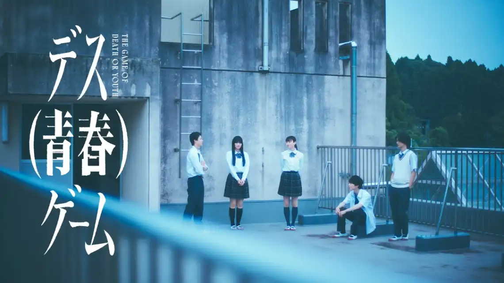

Death Seishun Game (2026)
デス（青春）ゲーム

Setelah kematian Kiryu Chiaki murid teladan, pengurus kelas yang dikagumi karena kecerdasan akademiknya sahabatnya, Ochiai Akane, tidak dapat menerima kematiannya, bersikeras bahwa ia tidak percaya Chiaki akan bunuh diri.
Saat informasi tentang Chiaki bocor di media sosial, kecurigaan terhadap sekolah tumbuh di kalangan siswa. Meskipun menuntut agar sekolah menyelidiki penyebab bunuh diri yang tampaknya dilakukan Chiaki, mereka tidak menerima penjelasan yang memuaskan. Kemudian, Murase Sosuke, teman sekelas yang diam-diam disukai Akane, merancang "death game" misterius dalam upaya untuk mengungkap kebenaran di balik kematian Chiaki.